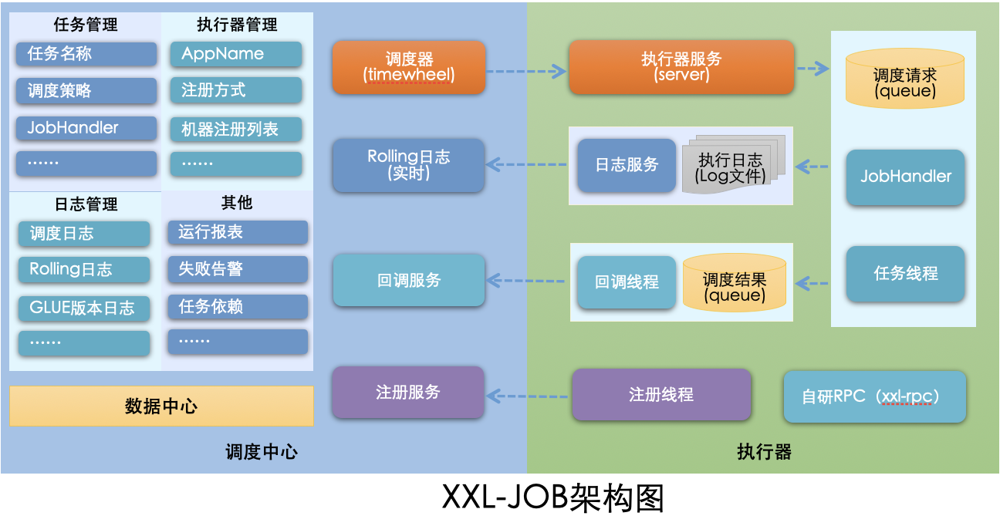

XXL-JOB 是由国内开发者 许雪里（xu_xueli）个人开发并开源的任务调度框架，项目托管在 GitHub 和 Gitee 上。
XXL-JOB 是一个轻量级分布式任务调度框架**，通过中心化的调度器（支持集群）统一管理任务，解决 Spring@Scheduled在分布式环境下的任务重复执行问题，并提供任务分片、失败重试、可视化监控等功能。
核心点：分布式协调 + 避免重复执行 + 运维友好
XXL-JOB 因其轻量、易用和稳定性，被许多互联网公司接入，例如： 大众点评【美团点评】、京东、滴滴、优信二手车、360金融等。
XXL-JOB 开源社区地址： https://www.xuxueli.com/xxl-job/ XXL：可以理解为超大号，类似服装尺码中的 “XXL”，暗示其适用于高负载、分布式场景。
XXL-JOB 架构图：

XXL-JOB 架构中的核心部分包括：调度中心、执行器、任务。调度中心（指挥官）：调度中心负责“什么时候、让谁、做什么事”，然后盯着他干完并记录结果。（调度中心是大脑，是最高指挥官）执行器（具体干啥活）：执行器是实际执行业务逻辑的代码单元（@XxlJob注解的方法）任务（什么时候干）：任务是调度中心里的一条配置记录，定义了执行时间、目标执行器和执行参数。